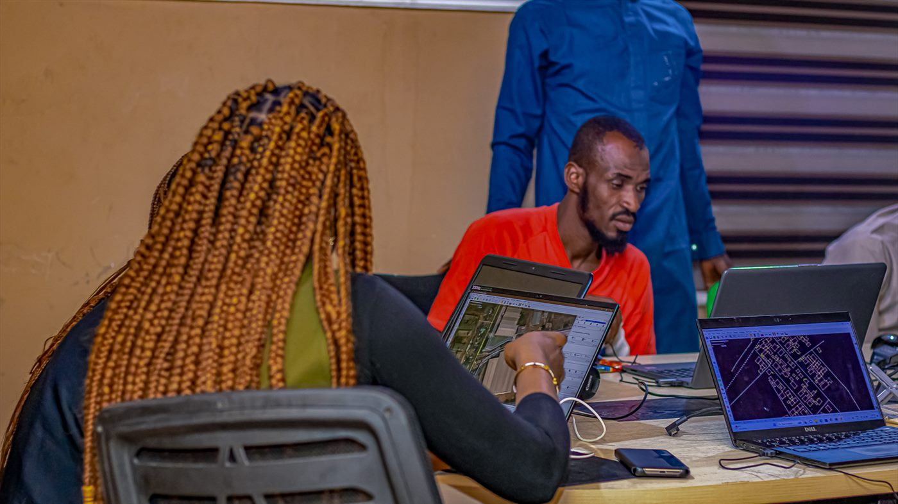

Service 05
Mapping advice and staff training.
We help teams plan mapping projects, choose tools, review maps and data, and learn how to keep them up to date.

The problem
Clear requirements help prevent mapping projects from going wrong.
Mapping projects can go wrong when the team has not agreed what the map must do, how to check the data or who will update it after delivery.
We can help before, during or after a project: write requirements, review suppliers, check data, support procurement and train staff. This advice is available whether you work with Waide or another supplier.
Independence: where we advise on a procurement, we say whether we intend to bid. We do not write a specification that only we can meet, and we do not review our own delivery as if it were independent.
Scope
What this service covers.
Requirements analysis
Structured interviews and workshops to turn operational needs into spatial requirements, use cases and acceptance criteria.
GIS implementation advisory
Options appraisal, architecture review, platform selection and a realistic implementation roadmap.
Data-management frameworks
Ownership, stewardship, standards, metadata, versioning, retention and access rules for spatial data.
Technical project planning
Work breakdown, dependencies, resourcing, risks and a delivery schedule that reflects the data reality.
Quality assurance
Independent review of datasets, schemas, routing logic, interfaces and documentation against agreed criteria.
Training and knowledge transfer
Role-based training, worked exercises on your own data, user manuals and a handover record.
Engagement types
Four ways to use advisory capacity.
| Engagement | Typical duration | What it produces |
|---|---|---|
| Technical review | One to three weeks | A written assessment of an existing dataset, platform or proposal, with prioritised findings |
| Requirements study | Two to six weeks | Use cases, requirements register, data-gap analysis and a recommended delivery route |
| Specification and procurement support | Four to ten weeks | Scope, technical specification, evaluation criteria and clarification support |
| Embedded advisory | By agreement | Recurring technical input to a programme, with a defined cadence and decision log |
Durations are indicative. Every engagement starts with a scoping conversation and a written scope note.
Outputs
What you receive.
- A requirements register with use cases, priorities and acceptance criteria.
- A data assessment covering coverage, currency, schema quality and gaps.
- An options paper with a clear recommendation and the trade-offs behind it.
- A technical specification suitable for procurement, where that is the brief.
- A QA report with findings ranked by risk and a remediation route.
- Training materials, manuals and a record of the handover sessions.
Who this is for
- Public institutions specifying a GIS or spatial data programme.
- Engineering consultancies needing geospatial input on a bid or project.
- Development partners assessing a spatial component.
- Facilities and estates teams inheriting an undocumented system.
- Technology organisations entering the geospatial domain.
We advise in the language of the decision, not the language of the software licence.
Capacity building
Training that uses your data, not a sample dataset.
Training can focus on the tasks your team needs to do, such as updating routes, checking new data and publishing a map.
Typical modules
- Spatial data fundamentals and coordinate reference systems.
- Digitising and attributing features to a defined schema.
- Route network construction and validation.
- Data quality checks and error handling.
- Publishing and maintaining a web map.
- Change management for a live spatial dataset.
How it is delivered
- Short sessions or a multi-day programme, on site or remote.
- Recorded walk-throughs and written exercises where useful.
- Assessment tasks based on the client's own data.
- A reference manual that outlives the training room.
- Follow-up support at an agreed interval.
Questions
Common questions.
Can you review a system built by another supplier?
Yes. We review against the stated requirements and accepted practice, and we report findings with evidence. We do not require the original supplier's cooperation, though it usually helps.
Will you bid for work you helped specify?
Only with that conflict declared in writing. Where the client prefers a clean separation, we restrict the engagement to specification and evaluation support.
Do you offer formal qualifications or certifications?
We do not claim certifications we do not hold. Advisory output is a professional technical assessment, and the methods and evidence behind each finding are documented.
How is an advisory engagement priced?
Usually as a fixed fee for a defined output, or a day rate for embedded work. The scope note states what is included, what is excluded and how changes are handled.
Next step
Bring the question you cannot answer internally.
Send us a project plan, map data or software proposal and the deadline. We will say what we can review and what it will cost.